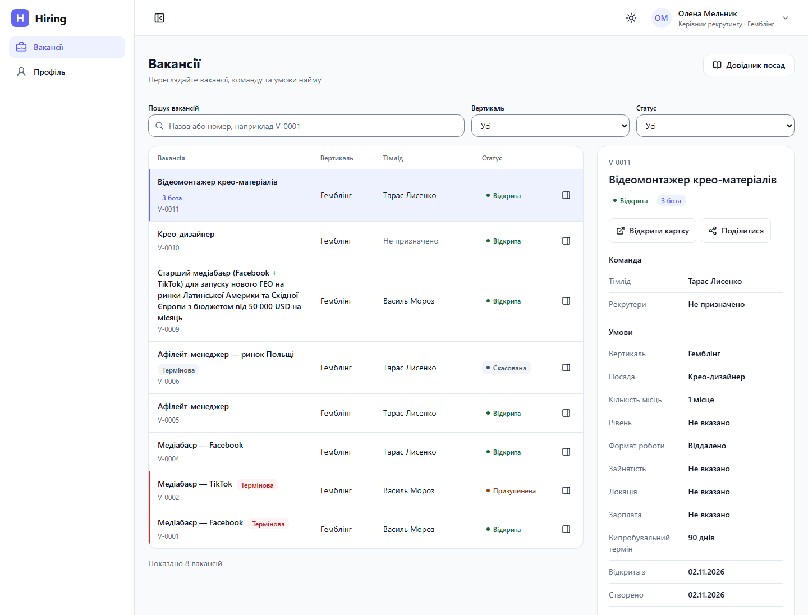
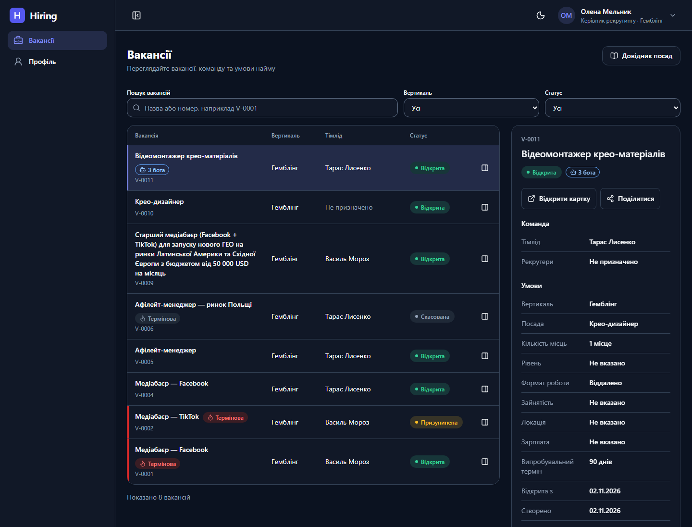
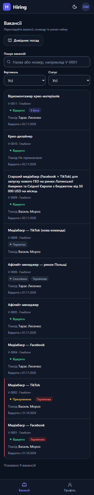
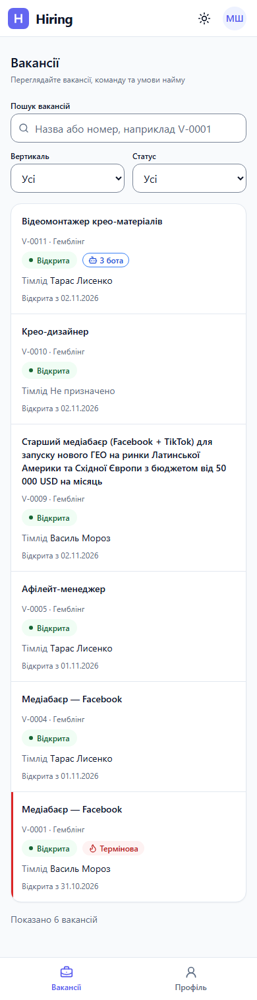
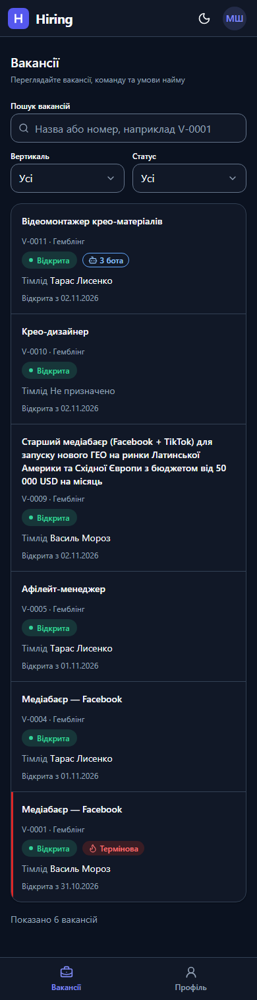
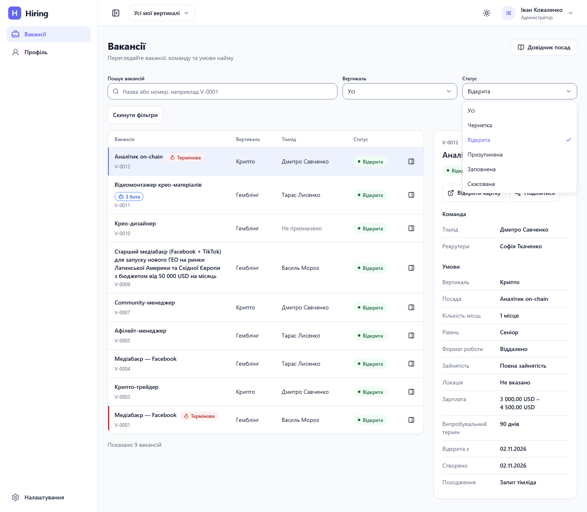

Hiring — фаза 2
Ролі: Адміністратор, Керівник рекрутингу, Рекрутер, Тімлід, Керівник HR, Фінансист. Теми: світла й темна. Екрани: компʼютер 1440×900 і телефон 390×844 (картки замість таблиці, без бічного огляду).
Це перший етап фази 2: перегляд вакансій — список, пошук за назвою чи номером (V-0001), фільтри за вертикаллю й статусом, огляд і картка — та «Довідник посад» для Адміністратора і Керівника рекрутингу (додати, перейменувати, деактивувати й повернути посаду). Створення вакансій, кандидати й бонуси з’являться разом із реальними діями. Ролі з однаковим виглядом показано одним знімком.
Дані — демо-дані з 12 доступних вакансій і однієї видаленої (її не бачить ніхто). Стани завантаження, помилки й порожнього списку відтворено підміною відповіді сервера; довідник посад показано на підготовленому українському наборі посад (є посада з двома відкритими вакансіями, з довгою назвою, неактивні в обох вертикалях). Ранніші екрани — у галереї фази 1 .
Вакансії — список (Адміністратор, Керівник рекрутингу, Рекрутер, Тімлід, Керівник HR): Вакансії — Адміністратор бачить усі 12 вакансій обох вертикалей; праворуч огляд вибраної вакансії (на телефоні — картки); Вакансії — Керівник рекрутингу бачить лише вакансії Гемблінгу (9 з 12); Вакансії — Рекрутер (Марія Шевченко): призначені вакансії та вільні відкриті у своїй вертикалі; Вакансії — Тімлід (Василь Мороз): лише власні вакансії, зокрема з дуже довгою назвою; Вакансії — Керівник HR бачить усі вакансії двох вертикалей. Так само бачить HR-менеджерВакансії — картка (Адміністратор, Тімлід, Рекрутер, Керівник рекрутингу): Картка вакансії — термінова: команда, умови, дати; Картка вакансії — термінова на паузі: червоний акцент разом із бейджем статусу; Картка вакансії — термінова, але скасована: нейтральна позначка без червоного; Картка вакансії — термінова, але заповнена: нейтральна позначка без червоного; Картка вакансії — дуже довга назва переноситься без горизонтальної прокрутки; Картка вакансії — ініціатива рекрутера, тімліда ще не призначено; Картка вакансії — вакансія іншої вертикалі або видалена: «Сторінку не знайдено» (справжній HTTP 404)Вакансії — пошук і фільтри (Керівник рекрутингу, Адміністратор): Вакансії — вертикаль «Крипто» вибрана в шапці: список і фільтр «Вертикаль» звужені до трьох вакансій (на телефоні перемикача в шапці немає); Вакансії — пошук «tiktok» знайшов три вакансії; «Скинути фільтри» доступне; Вакансії — відкритий список фільтра «Статус»: поточний статус «Відкрита» позначено галочкою; Вакансії — нічого не знайдено за фільтрами і працююче «Скинути фільтри»Вакансії — стани (Адміністратор): Вакансії — оновлення списку: попередній список приглушено, поруч повідомлення «Оновлюємо список…»; Вакансії — помилка завантаження з можливістю повторити; Вакансії — вакансій поки немає (без кнопки створення); Вакансії — огляд іде за вибраним рядком (приклад: вакансія з довгою назвою); Вакансії — огляд термінової відкритої вакансії (червоний); Вакансії — огляд термінової призупиненої вакансії (червоний); Вакансії — огляд термінової скасованої вакансії (без червоного); Вакансії — огляд термінової заповненої вакансії (без червоного); Вакансії — помилка лише в огляді, список працюєВакансії без доступу (Фінансист): Вакансії — «Сторінку не знайдено» в застосунку для Фінансиста (справжній HTTP 404)Довідник посад — список (Адміністратор, Керівник рекрутингу): Довідник посад — посади згруповано за вертикалями, довга назва переноситься, праворуч дії; на телефоні — картки (Адміністратор); Довідник посад — одна вертикаль: плоский список без фільтра вертикалі (Керівник рекрутингу); Довідник посад — вибрано одну вертикаль: підзаголовок називає її, груп немає (Адміністратор); Довідник посад — «Показати неактивні»: неактивна посада з дією «Активувати» (Адміністратор); Довідник посад — «Показати неактивні»: неактивна посада з дією «Активувати» (Керівник рекрутингу)Довідник посад — стани списку (Адміністратор, Керівник рекрутингу): Довідник посад — завантаження: заголовок і фільтри на місці, у списку скелет (Адміністратор); Довідник посад — завантаження: заголовок і фільтри на місці, у списку скелет (Керівник рекрутингу); Довідник посад — посад ще немає, є кнопка «Додати посаду» (Адміністратор); Довідник посад — посад ще немає, є кнопка «Додати посаду» (Керівник рекрутингу); Довідник посад — вертикаль без посад усередині згрупованого списку (Адміністратор); Довідник посад — усі посади неактивні, пропонується показати їх (Адміністратор); Довідник посад — усі посади неактивні, пропонується показати їх (Керівник рекрутингу); Довідник посад — помилка завантаження з можливістю повторити (Адміністратор); Довідник посад — помилка завантаження з можливістю повторити (Керівник рекрутингу)Довідник посад — нова посада (Адміністратор, Керівник рекрутингу): Нова посада — порожня форма (з вибором вертикалі лише для кількох вертикалей; на телефоні — нижня панель) (Адміністратор); Нова посада — порожня форма (з вибором вертикалі лише для кількох вертикалей; на телефоні — нижня панель) (Керівник рекрутингу); Нова посада — не вибрано вертикаль і занадто коротка назва (Адміністратор); Нова посада — назва довша за 80 символів (Адміністратор); Нова посада — назва довша за 80 символів (Керівник рекрутингу); Нова посада — посада з такою назвою вже є (Адміністратор); Нова посада — посада з такою назвою вже є (Керівник рекрутингу); Нова посада — така назва є в неактивної посади, підказано активувати її (Адміністратор); Нова посада — така назва є в неактивної посади, підказано активувати її (Керівник рекрутингу); Нова посада — назва з 80 символів переноситься без горизонтальної прокрутки (Адміністратор); Нова посада — назва з 80 символів переноситься без горизонтальної прокрутки (Керівник рекрутингу); Довідник посад — посаду створено: сповіщення і новий рядок із нулем відкритих вакансій (Адміністратор)Довідник посад — перейменування і деактивація (Адміністратор, Керівник рекрутингу): Перейменування — поточна назва, підказка «Назва не змінилася» (Адміністратор); Перейменування — поточна назва, підказка «Назва не змінилася» (Керівник рекрутингу); Перейменування — посаду щойно змінили, дані оновлено, можна повторити (Адміністратор); Перейменування — посаду щойно змінили, дані оновлено, можна повторити (Керівник рекрутингу); Деактивація — підтвердження для посади без відкритих вакансій (Адміністратор); Деактивація — підтвердження для посади без відкритих вакансій (Керівник рекрутингу); Деактивація — попередження про дві відкриті вакансії (вони не блокують дію) (Адміністратор); Деактивація — попередження про дві відкриті вакансії (вони не блокують дію) (Керівник рекрутингу)Довідник посад — вхід і доступ (Адміністратор, Керівник рекрутингу, Рекрутер, Фінансист): Вакансії — кнопка «Довідник посад» у заголовку є лише тим, хто керує довідником (Адміністратор); Вакансії — кнопка «Довідник посад» у заголовку є лише тим, хто керує довідником (Керівник рекрутингу); Вакансії — Рекрутер не бачить кнопки «Довідник посад»; Довідник посад — «Сторінку не знайдено» в застосунку для Рекрутера (справжній HTTP 404; так само Тімлід, HR-менеджер, Керівник HR); Довідник посад — «Сторінку не знайдено» в застосунку для Фінансиста (справжній HTTP 404); Довідник посад — Адміністратор без коду 2FA потрапляє на сторінку підтвердження зі шляхом назад (Адміністратор); Довідник посад — код 2FA втрачено під час сеансу: повідомлення з кнопкою «Підтвердити вхід», дані не змінено (Адміністратор)Каркас інтерфейсу — діалоги (Адміністратор (галерея розробника)): Діалог малий (28 rem): шапка з іконкою й підзаголовком, дії праворуч; Діалог середній (36 rem); на телефоні — нижня шторка з діями в стовпчик, головна дія внизу; Діалог великий (48 rem)Каркас інтерфейсу — підтвердження (Адміністратор (галерея розробника)): Підтвердження — нейтральна дія: фокус на «Скасувати»; Підтвердження — небезпечна дія з переліком наслідків: кнопка червона; Підтвердження з причиною — кнопка недоступна, поки в полі немає тексту; на телефоні причину видно під кнопкою; Підтвердження з причиною — текст введено, кнопка активна, лічильник символів; Підтвердження — запит виконується: індикатор у кнопці, ширина кнопок не змінюється; Підтвердження — помилка 409 показана в самому діалозі, причину збережено; Підтвердження — довга назва в лапках і причина з 500 символів переносяться без горизонтальної прокрутки; Підтвердження — довгі підписи кнопок (31 і 58 символів) переносяться, дії лишаються в діалозіКаркас інтерфейсу — шари й шторка (Адміністратор (галерея розробника)): Випадний список відкривається над діалогом і не обрізається ним; Бокова шторка 400 px; на телефоні займає всю ширину Вакансії — список · Адміністратор, Керівник рекрутингу, Рекрутер, Тімлід, Керівник HR
Вакансії — Адміністратор бачить усі 12 вакансій обох вертикалей; праворуч огляд вибраної вакансії (на телефоні — картки)
Вакансії — Керівник рекрутингу бачить лише вакансії Гемблінгу (9 з 12) 
Керівник рекрутингу · компʼютер · світла 
Керівник рекрутингу · компʼютер · темна Керівник рекрутингу · телефон · світла 
Керівник рекрутингу · телефон · темна Вакансії — Рекрутер (Марія Шевченко): призначені вакансії та вільні відкриті у своїй вертикалі Рекрутер · компʼютер · світла Рекрутер · компʼютер · темна 
Рекрутер · телефон · світла 
Рекрутер · телефон · темна Вакансії — Тімлід (Василь Мороз): лише власні вакансії, зокрема з дуже довгою назвою
Вакансії — Керівник HR бачить усі вакансії двох вертикалей. Так само бачить HR-менеджер Вакансії — картка · Адміністратор, Тімлід, Рекрутер, Керівник рекрутингу
Картка вакансії — термінова: команда, умови, дати
Картка вакансії — термінова на паузі: червоний акцент разом із бейджем статусу
Картка вакансії — термінова, але скасована: нейтральна позначка без червоного
Картка вакансії — термінова, але заповнена: нейтральна позначка без червоного
Картка вакансії — дуже довга назва переноситься без горизонтальної прокрутки
Картка вакансії — ініціатива рекрутера, тімліда ще не призначено
Картка вакансії — вакансія іншої вертикалі або видалена: «Сторінку не знайдено» (справжній HTTP 404) Вакансії — пошук і фільтри · Керівник рекрутингу, Адміністратор
Вакансії — пошук «tiktok» знайшов три вакансії; «Скинути фільтри» доступне
Вакансії — відкритий список фільтра «Статус»: поточний статус «Відкрита» позначено галочкою 
Список статусів · компʼютер · світла Список статусів · компʼютер · темна Список статусів · телефон · світла Список статусів · телефон · темна Вакансії — нічого не знайдено за фільтрами і працююче «Скинути фільтри» Нічого не знайдено · компʼютер · світла Нічого не знайдено · компʼютер · темна Нічого не знайдено · телефон · світла Нічого не знайдено · телефон · темна Вакансії — стани · Адміністратор
Вакансії — оновлення списку: попередній список приглушено, поруч повідомлення «Оновлюємо список…» Оновлення · компʼютер · світла Оновлення · компʼютер · темна Оновлення · телефон · світла Оновлення · телефон · темна Вакансії — помилка завантаження з можливістю повторити Помилка · компʼютер · світла Помилка · компʼютер · темна Помилка · телефон · світла Помилка · телефон · темна Вакансії — вакансій поки немає (без кнопки створення) Порожньо · компʼютер · світла Порожньо · компʼютер · темна Порожньо · телефон · світла Порожньо · телефон · темна Вакансії — огляд іде за вибраним рядком (приклад: вакансія з довгою назвою) Вибрана вакансія · компʼютер · світла Вибрана вакансія · компʼютер · темна Вакансії — огляд термінової відкритої вакансії (червоний) Огляд, термінова відкрита · компʼютер · світла Огляд, термінова відкрита · компʼютер · темна Вакансії — огляд термінової призупиненої вакансії (червоний) Огляд, термінова призупинена · компʼютер · світла Огляд, термінова призупинена · компʼютер · темна Вакансії — огляд термінової скасованої вакансії (без червоного) Огляд, термінова скасована · компʼютер · світла Огляд, термінова скасована · компʼютер · темна Вакансії — огляд термінової заповненої вакансії (без червоного) Огляд, термінова заповнена · компʼютер · світла Огляд, термінова заповнена · компʼютер · темна Вакансії — помилка лише в огляді, список працює Помилка огляду · компʼютер · світла Помилка огляду · компʼютер · темна Вакансії без доступу · Фінансист
Вакансії — «Сторінку не знайдено» в застосунку для Фінансиста (справжній HTTP 404) Фінансист · компʼютер · світла Фінансист · компʼютер · темна Фінансист · телефон · світла Фінансист · телефон · темна Довідник посад — список · Адміністратор, Керівник рекрутингу
Довідник посад — посади згруповано за вертикалями, довга назва переноситься, праворуч дії; на телефоні — картки (Адміністратор) Адміністратор · компʼютер · світла Адміністратор · компʼютер · темна Адміністратор · телефон · світла Адміністратор · телефон · темна Довідник посад — одна вертикаль: плоский список без фільтра вертикалі (Керівник рекрутингу) Керівник рекрутингу · компʼютер · світла Керівник рекрутингу · компʼютер · темна Керівник рекрутингу · телефон · світла Керівник рекрутингу · телефон · темна Довідник посад — вибрано одну вертикаль: підзаголовок називає її, груп немає (Адміністратор) Адміністратор · компʼютер · світла Адміністратор · компʼютер · темна Адміністратор · телефон · світла Адміністратор · телефон · темна Довідник посад — «Показати неактивні»: неактивна посада з дією «Активувати» (Адміністратор) Адміністратор · компʼютер · світла Адміністратор · компʼютер · темна Адміністратор · телефон · світла Адміністратор · телефон · темна Довідник посад — «Показати неактивні»: неактивна посада з дією «Активувати» (Керівник рекрутингу) Керівник рекрутингу · компʼютер · світла Керівник рекрутингу · компʼютер · темна Керівник рекрутингу · телефон · світла Керівник рекрутингу · телефон · темна Довідник посад — стани списку · Адміністратор, Керівник рекрутингу
Довідник посад — завантаження: заголовок і фільтри на місці, у списку скелет (Адміністратор) Адміністратор · компʼютер · світла Адміністратор · компʼютер · темна Адміністратор · телефон · світла Адміністратор · телефон · темна Довідник посад — завантаження: заголовок і фільтри на місці, у списку скелет (Керівник рекрутингу) Керівник рекрутингу · компʼютер · світла Керівник рекрутингу · компʼютер · темна Керівник рекрутингу · телефон · світла Керівник рекрутингу · телефон · темна Довідник посад — посад ще немає, є кнопка «Додати посаду» (Адміністратор) Адміністратор · компʼютер · світла Адміністратор · компʼютер · темна Адміністратор · телефон · світла Адміністратор · телефон · темна Довідник посад — посад ще немає, є кнопка «Додати посаду» (Керівник рекрутингу) Керівник рекрутингу · компʼютер · світла Керівник рекрутингу · компʼютер · темна Керівник рекрутингу · телефон · світла Керівник рекрутингу · телефон · темна Довідник посад — вертикаль без посад усередині згрупованого списку (Адміністратор) Адміністратор · компʼютер · світла Адміністратор · компʼютер · темна Адміністратор · телефон · світла Адміністратор · телефон · темна Довідник посад — усі посади неактивні, пропонується показати їх (Адміністратор) Адміністратор · компʼютер · світла Адміністратор · компʼютер · темна Адміністратор · телефон · світла Адміністратор · телефон · темна Довідник посад — усі посади неактивні, пропонується показати їх (Керівник рекрутингу) Керівник рекрутингу · компʼютер · світла Керівник рекрутингу · компʼютер · темна Керівник рекрутингу · телефон · світла Керівник рекрутингу · телефон · темна Довідник посад — помилка завантаження з можливістю повторити (Адміністратор) Адміністратор · компʼютер · світла Адміністратор · компʼютер · темна Адміністратор · телефон · світла Адміністратор · телефон · темна Довідник посад — помилка завантаження з можливістю повторити (Керівник рекрутингу) Керівник рекрутингу · компʼютер · світла Керівник рекрутингу · компʼютер · темна Керівник рекрутингу · телефон · світла Керівник рекрутингу · телефон · темна Довідник посад — нова посада · Адміністратор, Керівник рекрутингу
Нова посада — порожня форма (з вибором вертикалі лише для кількох вертикалей; на телефоні — нижня панель) (Адміністратор) Адміністратор · компʼютер · світла Адміністратор · компʼютер · темна Адміністратор · телефон · світла Адміністратор · телефон · темна Нова посада — порожня форма (з вибором вертикалі лише для кількох вертикалей; на телефоні — нижня панель) (Керівник рекрутингу) Керівник рекрутингу · компʼютер · світла Керівник рекрутингу · компʼютер · темна Керівник рекрутингу · телефон · світла Керівник рекрутингу · телефон · темна Нова посада — не вибрано вертикаль і занадто коротка назва (Адміністратор) Адміністратор · компʼютер · світла Адміністратор · компʼютер · темна Адміністратор · телефон · світла Адміністратор · телефон · темна Нова посада — назва довша за 80 символів (Адміністратор) Адміністратор · компʼютер · світла Адміністратор · компʼютер · темна Адміністратор · телефон · світла Адміністратор · телефон · темна Нова посада — назва довша за 80 символів (Керівник рекрутингу) Керівник рекрутингу · компʼютер · світла Керівник рекрутингу · компʼютер · темна Керівник рекрутингу · телефон · світла Керівник рекрутингу · телефон · темна Нова посада — посада з такою назвою вже є (Адміністратор) Адміністратор · компʼютер · світла Адміністратор · компʼютер · темна Адміністратор · телефон · світла Адміністратор · телефон · темна Нова посада — посада з такою назвою вже є (Керівник рекрутингу) Керівник рекрутингу · компʼютер · світла Керівник рекрутингу · компʼютер · темна Керівник рекрутингу · телефон · світла Керівник рекрутингу · телефон · темна Нова посада — така назва є в неактивної посади, підказано активувати її (Адміністратор) Адміністратор · компʼютер · світла Адміністратор · компʼютер · темна Адміністратор · телефон · світла Адміністратор · телефон · темна Нова посада — така назва є в неактивної посади, підказано активувати її (Керівник рекрутингу) Керівник рекрутингу · компʼютер · світла Керівник рекрутингу · компʼютер · темна Керівник рекрутингу · телефон · світла Керівник рекрутингу · телефон · темна Нова посада — назва з 80 символів переноситься без горизонтальної прокрутки (Адміністратор) Адміністратор · компʼютер · світла Адміністратор · компʼютер · темна Адміністратор · телефон · світла Адміністратор · телефон · темна Нова посада — назва з 80 символів переноситься без горизонтальної прокрутки (Керівник рекрутингу) Керівник рекрутингу · компʼютер · світла Керівник рекрутингу · компʼютер · темна Керівник рекрутингу · телефон · світла Керівник рекрутингу · телефон · темна Довідник посад — посаду створено: сповіщення і новий рядок із нулем відкритих вакансій (Адміністратор) Адміністратор · компʼютер · світла Адміністратор · компʼютер · темна Адміністратор · телефон · світла Адміністратор · телефон · темна Довідник посад — перейменування і деактивація · Адміністратор, Керівник рекрутингу
Перейменування — поточна назва, підказка «Назва не змінилася» (Адміністратор) Адміністратор · компʼютер · світла Адміністратор · компʼютер · темна Адміністратор · телефон · світла Адміністратор · телефон · темна Перейменування — поточна назва, підказка «Назва не змінилася» (Керівник рекрутингу) Керівник рекрутингу · компʼютер · світла Керівник рекрутингу · компʼютер · темна Керівник рекрутингу · телефон · світла Керівник рекрутингу · телефон · темна Перейменування — посаду щойно змінили, дані оновлено, можна повторити (Адміністратор) Адміністратор · компʼютер · світла Адміністратор · компʼютер · темна Адміністратор · телефон · світла Адміністратор · телефон · темна Перейменування — посаду щойно змінили, дані оновлено, можна повторити (Керівник рекрутингу) Керівник рекрутингу · компʼютер · світла Керівник рекрутингу · компʼютер · темна Керівник рекрутингу · телефон · світла Керівник рекрутингу · телефон · темна Деактивація — підтвердження для посади без відкритих вакансій (Адміністратор) Адміністратор · компʼютер · світла Адміністратор · компʼютер · темна Адміністратор · телефон · світла Адміністратор · телефон · темна Деактивація — підтвердження для посади без відкритих вакансій (Керівник рекрутингу) Керівник рекрутингу · компʼютер · світла Керівник рекрутингу · компʼютер · темна Керівник рекрутингу · телефон · світла Керівник рекрутингу · телефон · темна Деактивація — попередження про дві відкриті вакансії (вони не блокують дію) (Адміністратор) Адміністратор · компʼютер · світла Адміністратор · компʼютер · темна Адміністратор · телефон · світла Адміністратор · телефон · темна Деактивація — попередження про дві відкриті вакансії (вони не блокують дію) (Керівник рекрутингу) Керівник рекрутингу · компʼютер · світла Керівник рекрутингу · компʼютер · темна Керівник рекрутингу · телефон · світла Керівник рекрутингу · телефон · темна Каркас інтерфейсу — діалоги · Адміністратор (галерея розробника)
Діалог малий (28 rem): шапка з іконкою й підзаголовком, дії праворуч Адміністратор · компʼютер · світла Адміністратор · компʼютер · темна Діалог середній (36 rem); на телефоні — нижня шторка з діями в стовпчик, головна дія внизу Адміністратор · компʼютер · світла Адміністратор · компʼютер · темна Адміністратор · телефон · світла Адміністратор · телефон · темна Діалог великий (48 rem) Адміністратор · компʼютер · світла Адміністратор · компʼютер · темна Каркас інтерфейсу — підтвердження · Адміністратор (галерея розробника)
Підтвердження — нейтральна дія: фокус на «Скасувати» Адміністратор · компʼютер · світла Адміністратор · компʼютер · темна Адміністратор · телефон · світла Адміністратор · телефон · темна Підтвердження — небезпечна дія з переліком наслідків: кнопка червона Адміністратор · компʼютер · світла Адміністратор · компʼютер · темна Адміністратор · телефон · світла Адміністратор · телефон · темна Підтвердження з причиною — кнопка недоступна, поки в полі немає тексту; на телефоні причину видно під кнопкою Адміністратор · компʼютер · світла Адміністратор · компʼютер · темна Адміністратор · телефон · світла Адміністратор · телефон · темна Підтвердження з причиною — текст введено, кнопка активна, лічильник символів Адміністратор · компʼютер · світла Адміністратор · компʼютер · темна Адміністратор · телефон · світла Адміністратор · телефон · темна Підтвердження — запит виконується: індикатор у кнопці, ширина кнопок не змінюється Адміністратор · компʼютер · світла Адміністратор · компʼютер · темна Адміністратор · телефон · світла Адміністратор · телефон · темна Підтвердження — помилка 409 показана в самому діалозі, причину збережено Адміністратор · компʼютер · світла Адміністратор · компʼютер · темна Адміністратор · телефон · світла Адміністратор · телефон · темна Підтвердження — довга назва в лапках і причина з 500 символів переносяться без горизонтальної прокрутки Адміністратор · компʼютер · світла Адміністратор · компʼютер · темна Адміністратор · телефон · світла Адміністратор · телефон · темна Підтвердження — довгі підписи кнопок (31 і 58 символів) переносяться, дії лишаються в діалозі Адміністратор · компʼютер · світла Адміністратор · компʼютер · темна Адміністратор · телефон · світла Адміністратор · телефон · темна Каркас інтерфейсу — шари й шторка · Адміністратор (галерея розробника)
Випадний список відкривається над діалогом і не обрізається ним Адміністратор · компʼютер · світла Адміністратор · компʼютер · темна Адміністратор · телефон · світла Адміністратор · телефон · темна Бокова шторка 400 px; на телефоні займає всю ширину Адміністратор · компʼютер · світла Адміністратор · компʼютер · темна Адміністратор · телефон · світла Адміністратор · телефон · темна